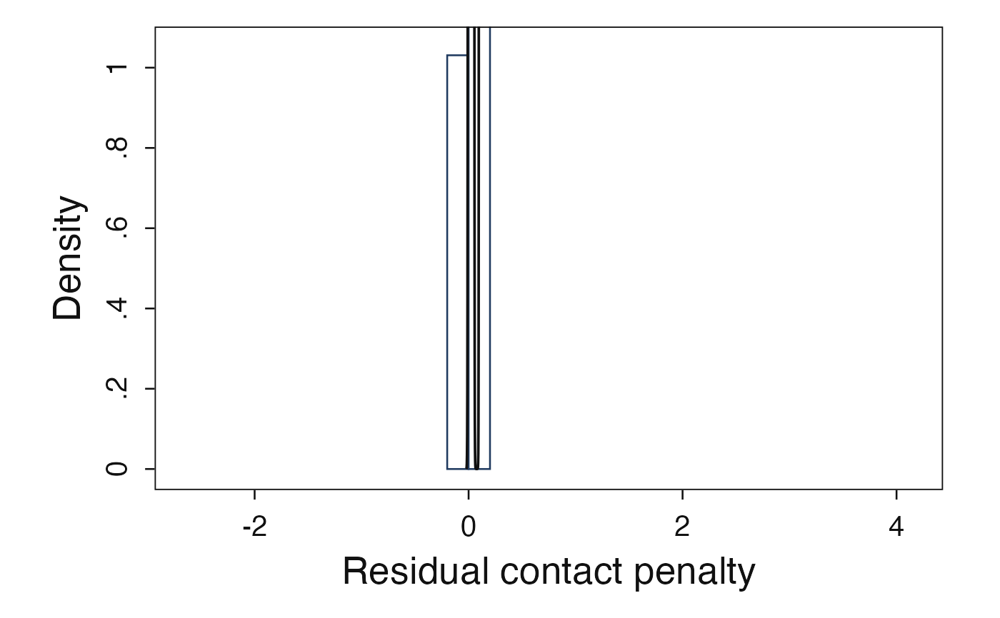

Plot a companion-style EB mixing distribution
Source:R/plot-mixing-distribution.R
plot_mixing_distribution.RdDraws the deconvolved mixing distribution and, when estimates is supplied,
overlays the observed-estimate histogram. The function covers both
standardized residual-scale plots g(r) and original contact-penalty-scale
plots g(theta) used in Walters (2024) companion Figure 04-01.
Arguments
- data
A mixing-density data frame or
eb_priorobject. Companion oracle CSVs with columnsx,density,sample_mean,model_mean,bias_corrected_sd, andmodel_sdare accepted, as are unnamed six-column CSV imports.- characteristic
Length-one label for the empirical characteristic being plotted, such as
"white"or"male". The companion aliases"race"for"white"and"gender"for"male"are also accepted. For residual-scale estimates this also selects the companion standardization formula.- scale
Plot scale. Use
"r"for the standardized residual scale and"theta"for the original contact-penalty scale.- estimates
Optional unit-level estimates used for the histogram layer. Numeric vectors are accepted directly as already being on the requested plot scale. Theta-scale data frames use
theta_hatorestimate; unnamed companion CSV imports may useV1. Residual-scale data frames must provider_hat/estimate, or includetheta_hat,s,psi1, andpsi2columns, with underscore variantspsi_1andpsi_2also accepted.- binwidth
Histogram bin width. When
NULL, companion defaults are used:0.2on the residual scale,0.005for race/white theta plots, and0.01for gender/male theta plots.- origin
Histogram bin origin/boundary. When
NULL, the companion default0is used.- trim
Logical. When
TRUE, apply the companion theta-scale density trimming rules (x <= 0.15for race/white andabs(x) <= 0.2for gender/male). Residual-scale density curves are not trimmed.- annotate
Logical. When
TRUE, add companion moment annotations. Plaineb_priorobjects do not carry the companion moment columns, so useannotate = FALSEunlessdataincludes those summaries.- target_id
Optional internal replication target identifier.
- source_receipt
Optional companion parity source receipt. In strict mode, protected companion targets such as
g_theta_whitemust provide the matching receipt so row counts and target metadata are checked before plotting.- validation_mode
Target validation mode. The default
"strict"requires receipts for protected companion targets,"exploratory"checks target metadata when possible without requiring a receipt, and"none"disables target validation.
Value
A ggplot object. The internal eb_figure_data object used to
build the plot is stored in attr(plot, "eb_figure_data").
Details
The companion Figure 04-01 targets are g_r_white, g_r_male,
g_theta_white, and g_theta_male. Residual-scale plots use the
Walters-style standardization formulas for race/white and gender/male
estimates. Theta-scale plots assume the density has already been
back-transformed onto the contact-penalty scale, for example by
eb_change_of_variables() or by a companion oracle CSV.
Exact Lane A companion examples require both target_id and
source_receipt so the helper can validate source assets and row counts.
Live workflow plots should omit protected target IDs. See
vignette("visualization", package = "ebrecipe") for receipt-backed
examples.
Examples
# \donttest{
if (requireNamespace("ggplot2", quietly = TRUE)) {
data("krw_firms", package = "ebrecipe")
est <- eb_input(krw_firms$theta_hat_race, krw_firms$se_race)
prior <- eb_deconvolve(est, grid_size = 80, penalty = "none")
# eb_deconvolve() returns the prior on the residual (r) scale; ask
# plot_mixing_distribution() for the matching scale. Use
# eb_change_of_variables(prior, s, psi_1, psi_2, model) first if you
# want the theta-scale density.
plot_mixing_distribution(
prior,
characteristic = "white",
scale = "r",
estimates = krw_firms$theta_hat_race,
annotate = FALSE
)
}

# }